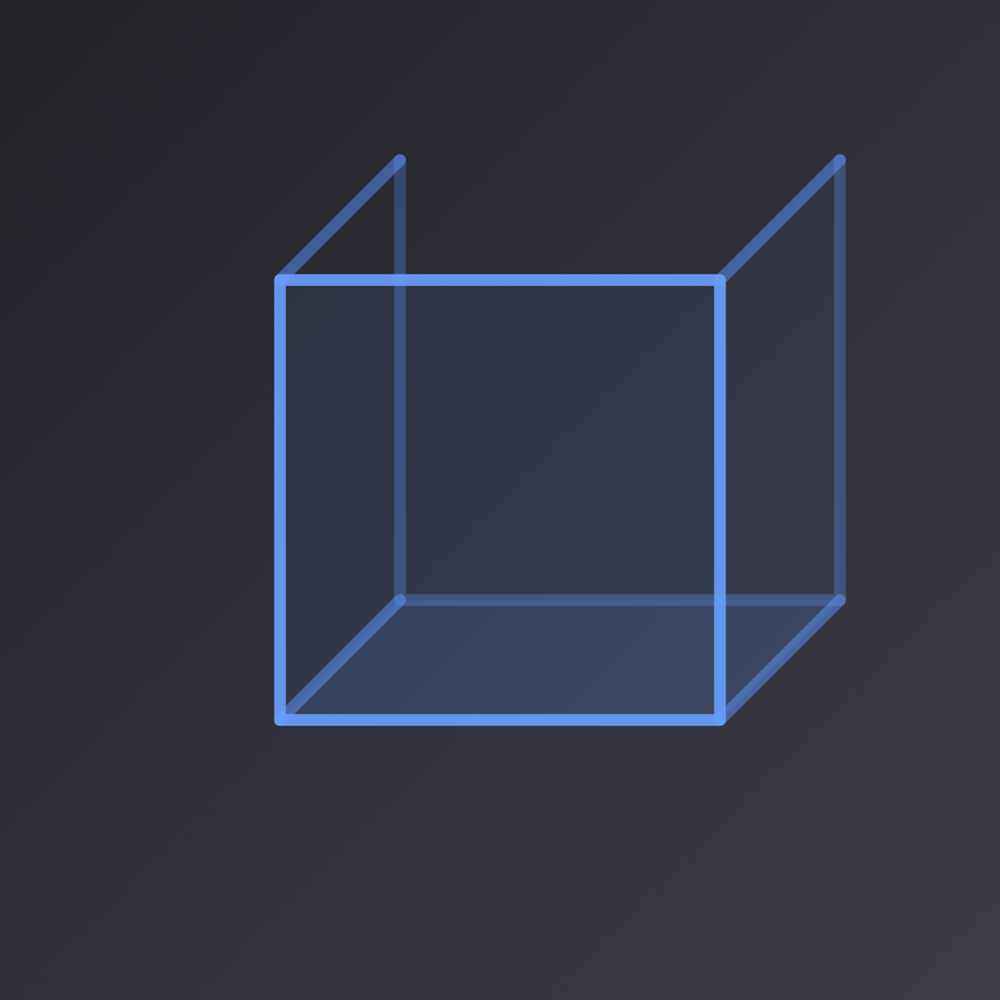

STL support
Open binary and ASCII STL files from Files or another application.

OML / 007 · Open source
STL Viewer opens STL and STEP files from Files or a share sheet. It renders geometry locally and provides model information, display controls, assembly-part controls, and measurement tools.
07A Native iOS workspace with local file processing.
STL Viewer provides a focused mobile workflow for model review. It opens common mesh and CAD exchange files without an account or remote conversion service.
The application processes model files on the device. It does not include analytics, advertisements, tracking, or a model-upload service.
Open binary and ASCII STL files from Files or another application.
Import STEP and STP geometry with the Open CASCADE engine.
Build and display SceneKit geometry directly on the device.
Show, hide, or isolate parts in a supported STEP assembly.
Inspect dimensions, triangle count, file size, and display modes.
Measure the distance between two selected surface points.
Open source
STL Viewer is available under the MIT License. The setup guide explains how to build the required Open CASCADE libraries for iOS before you build the application.
Get STL Viewer ↗